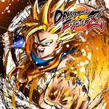

Dragon Ball FighterZ
DRAGON BALL FighterZ conserva la esencia de la famosa saga DRAGON BALL: espectaculares combates entre poderosos luchadores.
El juego, resultado de la colaboración con Arc System Works, cuenta con gráficos anime de alta calidad y unos combates de aprendizaje sencillo pero difíciles de dominar.